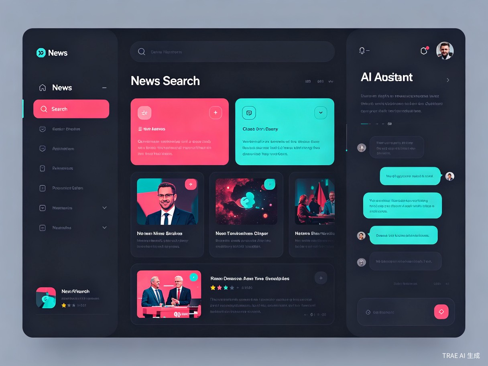

📱
多端适配
Web / Mobile / Desktop
NewsMind AI
AI 驱动的下一代新闻聚合与搜索平台 —— 自动推送、多模态搜索、智能 Agent、千人千面的个性化体验
Contents · 目录
信息过载时代，用户真正需要什么
NewsMind AI —— 核心功能全景
AI Agent 驱动的智能系统设计
目标用户、市场价值与发展路线
Part · 01
每天产生 2.5 万亿字节的数据，但真正有价值的信息却越来越难找到。
Pain Points · 用户痛点
每天耗费大量时间在碎片化信息中筛选，却依然难以找到真正需要的内容。
用户需要在多个新闻 App、社交媒体、搜索引擎之间来回切换，平均每天花费 45 分钟以上进行信息筛选，真正有效率的信息获取不到 20%。
推荐算法"信息茧房"效应严重，各大平台推送的内容高度雷同；当用户需要搜索特定主题的深度报道、图片或视频时，现有工具的搜索体验远不够理想。
现有的新闻工具无法理解用户的真实兴趣，不支持多模态搜索（同时搜索文字、图片、视频），更不能通过 AI Agent 主动为用户挖掘和整合信息。
Part · 02
让 AI 成为你的私人新闻编辑 —— 理解、搜索、整合、推送。

Product Overview · 产品总览
一款基于 AI Agent 的智能新闻搜索软件，支持自动推送、多模态搜索、Agent 智能体和个性化定制，让信息获取从"人找信息"变为"信息找人"。
Core Features · 核心功能
从被动浏览到主动服务，从单一文本到多模态融合
基于 AI 对用户兴趣的深度理解，自动推送最相关的新闻。支持实时热点追踪、行业动态监控、突发事件预警，推送频率和内容均可智能调节。
一次搜索，同时返回文本新闻、图片报道、视频资讯。支持以图搜图、语义搜索、时间线回溯，覆盖全球 5000+ 信息源，让深度研究不再困难。
可配置的智能 Agent 体系，支持自定义新闻监控 Agent、行业分析 Agent、舆情追踪 Agent。Agent 可自主学习、进化推送策略，真正做到"信息找人"。
深度可定制的信息流，支持兴趣图谱编辑、关键词黑/白名单、推送优先级配置。从界面主题到内容偏好，每一个细节都为你量身打造。
AI Agent · 智能体
从感知到决策，再到执行，构建完整的智能信息处理链路
7×24 小时监控全球 5000+ 信息源，自动识别热点话题、行业动态、突发事件，并基于 NLP 进行内容理解和分类。
对感知到的信息进行深度分析，包括情感分析、趋势预测、关联挖掘、事实核查，生成结构化知识图谱。
结合用户画像和实时行为数据，制定个性化推送策略，支持多模态内容重组（图文/视频/音频），并持续学习优化。
Personalization · 个性化
每个用户都应该拥有专属的"新闻编辑部"
可视化编辑个人兴趣图谱，支持添加/删除兴趣节点、调整权重。系统通过行为数据自动优化图谱，也可手动微调。
精细控制推送频率、内容类型（纯文本/图文/视频）、推送时段、紧急程度。支持场景模式（工作/通勤/休闲）。
丰富的主题系统，从深色模式到阅读模式，从字体大小到卡片布局，每一个视觉元素都可定制。
用户可以创建和管理多个 Agent，分配不同的监控任务和分析方向，Agent 之间可协作共享信息。
Architecture · 技术架构
Web / Mobile / Desktop
WebSocket + SSE
多模态检索
用户画像 + 配置
信息采集 + 监控
NLP + 知识图谱
策略 + 个性化
Agent 协同调度
多模型接入
语义搜索
图/文/视频理解
协同 + 内容过滤
5000+ 全球源
实时 + 离线
Elasticsearch
去重 + 审核 + 合规
Target Users · 目标用户
从专业从业者到普通信息消费者，NewsMind AI 服务每一个渴望高效获取信息的人
Value · 价值与意义
商业价值、效率提升与社会价值三方面齐头并进
效率提升
信息获取效率提升
AI Agent 替代人工筛选，每日节省 40+ 分钟
商业价值
目标市场规模（年）
AI 新闻信息服务市场持续高速增长
信息质量
全球信息源接入
多语言、多类型，打破信息茧房
社会价值
事实核查覆盖
AI 辅助反虚假信息，守护信息真实
Roadmap · 发展路线图
三个阶段的清晰规划，稳步构建下一代新闻信息平台
核心新闻推送 + 基础搜索，1000+ 信息源接入，Web 端首发
三阶 Agent 体系上线，多模态搜索能力开放，个性化引擎 v1
Mobile App 发布，Desktop 客户端上线，5000+ 信息源
Agent 市场发布，第三方开发者接入 API，企业版发布
个性化推荐大模型微调，多语言全球化拓展，知识图谱全面构建
Call to Action
NewsMind AI 已通过 TRAE Work 完成全流程创意验证。
我们正在寻找志同道合的伙伴，一起把创意变成现实。
本提案使用 TRAE Work 全程创作 · TRAE AI 创造力大赛 · 学习工作赛道
世界很大，放手去造。
用 TRAE 把每一个创意变成现实。